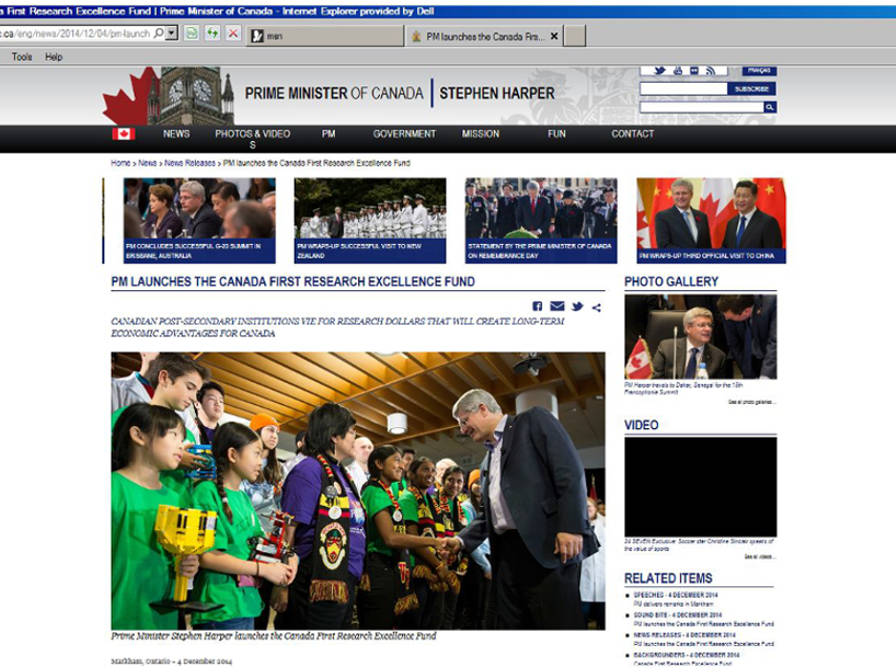
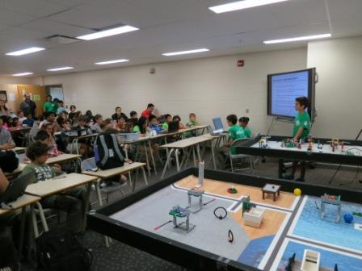

On December 4th, 2014, Prime Minister Stephen Harper visited the IBM Laboratories in Markham, ON to mark Canada’s achievements as a world leader in science and technology and to announce the federal government’s dedication to funding research and innovation in these fields. In attendance were Ed Holder, the Minister of State (Science and Technology), Paul Calandra, Parliamentary Secretary to the Prime Minister and for Intergovernmental Affairs, Joe Daniel, Member of Parliament for Don Valley East, John Carmichael, Member of Parliament for Don Valley West, the Deans from the U15, the top 15 Canadian Research Universities, and the Ctrl-Z Robotics Team. Ctrl-Z was invited to the event to represent FIRST Robotics Canada as well as to model student involvement in innovation and research ventures within the STEM (Science, Technology, Engineering, and Mathematics) fields. Once the Primes Minister finished his announcement, he spent some time with Ctrl-Z team members and inquired about their involvement in robotics and their interest in STEM. Ctrl-Z was especially surprised and excited when Stephen Harper asked them if he could operate one of our robots. After meeting with the Prime Minister, ‘sharing’ has taken on a whole new meaning for the team.


On Saturday, September 27th, 2014, Ctrl-Z presented to many new and returning teams and over 300 attendees at FLL Ontario World Class Kick-off and Training Event hosted at at Bayview Glen School. There, we refreshed and helped improve many people’s skills on building, programming, and presenting. We shared various concepts, from introductory to advanced, to help other teams make the best of this year’s season. Team from as far away as Quebec attended the event.



On Saturday, October 4th, 2014, as part of Fire Prevention Week, Ctrl-Z was invited by the District
Chief of Public Education to promote FLL at the Toronto Fire Services annual open house
with more than 500 attendees. We presented our Nature's Fury research project.
Our innovative solution was a self-righting candle holder which help
prevent fires during natural disasters, like ice-storms. By presenting our robot and project,
as well as demonstrating the benefits of joining FLL, we impressed many firefighters and the general public.
Here is a
link
to the event at FIRST Robotics Canada's Facebook page.


On Sunday, November 2nd, 2014, Ctrl-Z assisted Team AEMbots 4573, a rookie team. We invited AEMBots to our school and we shared insight on how they could improve their robot and learn new concepts in order to achieve more and take more away from their experience in FLL. It was great to meet and help a fellow team who is as interested in FLL as we are. Best of luck to the team.

On Saturday, November 22nd, 2014, Ctrl-Z spent the morning talking about FLL, as well showing our robot and Rhythm Ramp to dozens of guests at Bayview Glen School’s open house. People were amazed at what we could accomplish as a team. Additionally, approximately 20 attendees of an educational conference visited us. We showed how much we have learned by participating in FLL.


On Saturday, November 29th, 2014, Ctrl-Z volunteered at the Westview Centennial Secondary School regional qualifier. We served as score keepers, table reset volunteers, and referees. This not only enabled us to gain a better understanding of the rules, but also to appreciate the roles of volunteers at our upcoming tournament on December 13th. As well, it was another chance to give back to the FLL community that has done so much for us.


On Friday, December 12th, 2014, Ctrl-Z presented their research and innovative solution in front of 100 attendees from the Bayview Glen Middle School. The students were intrigued by our new approach to teaching music and couldn't wait to try out the Rhythm Ramp. We were asked interesting questions that showed the strengths of our invention, as well as what we still had to improve upon. It was really a great learning experience for both the audience and us.